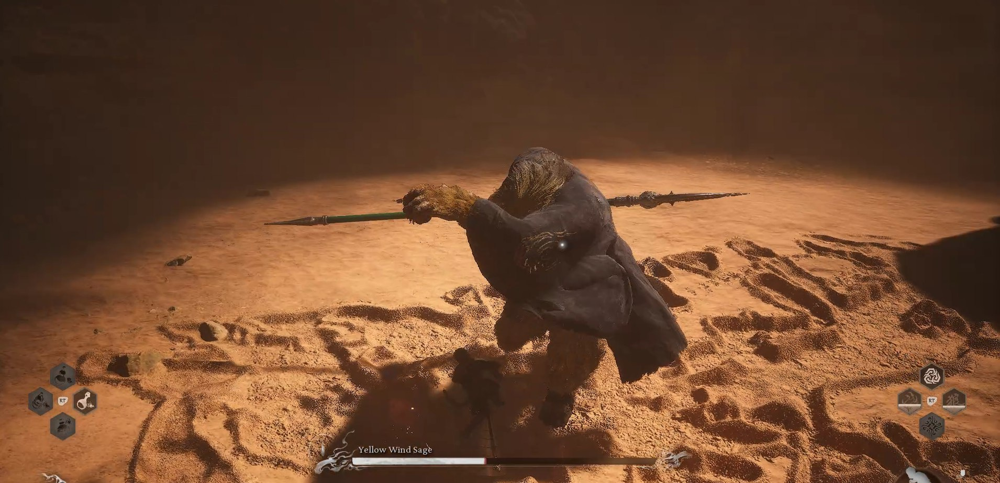
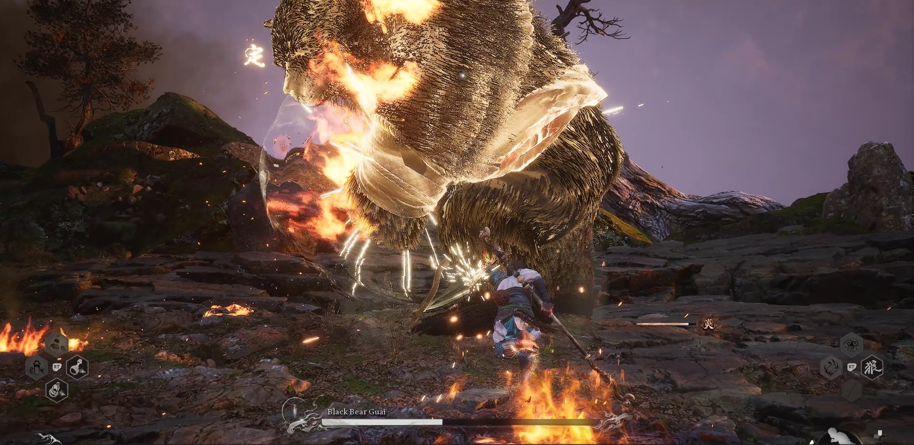
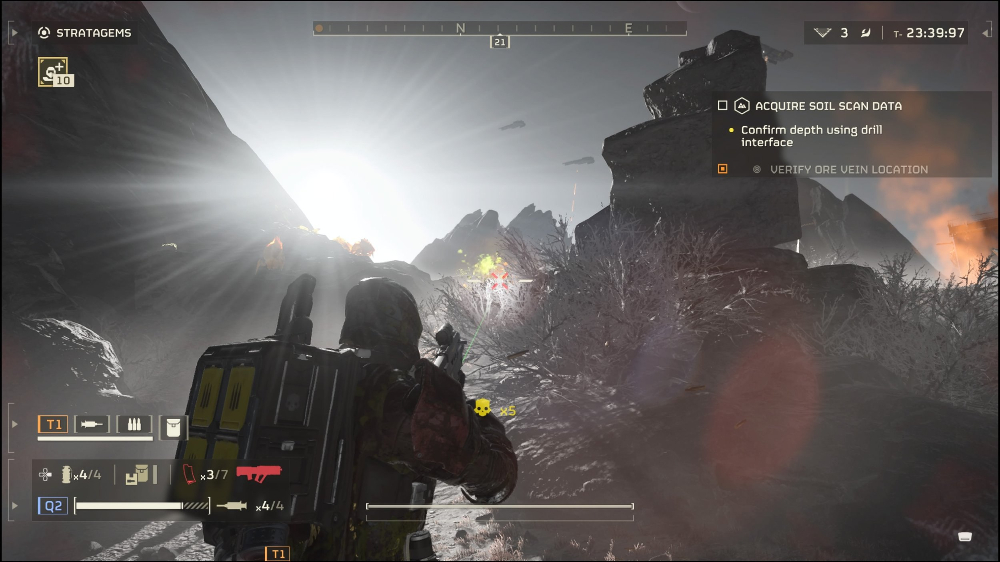
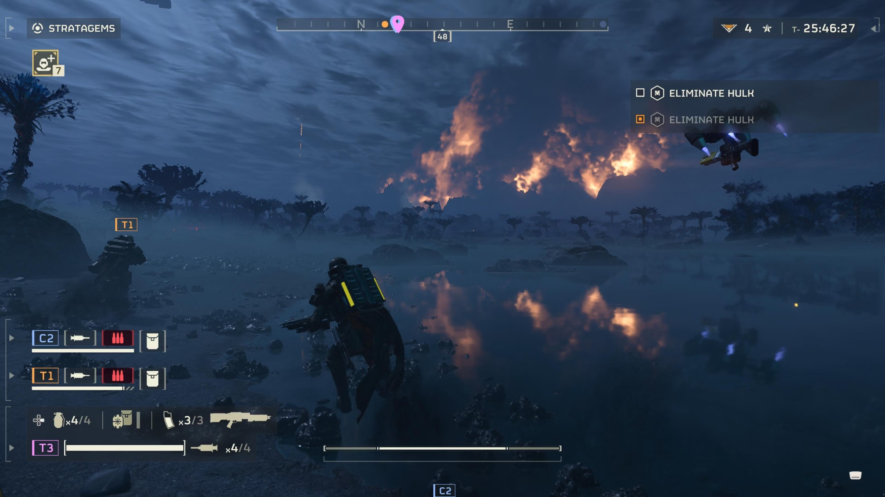
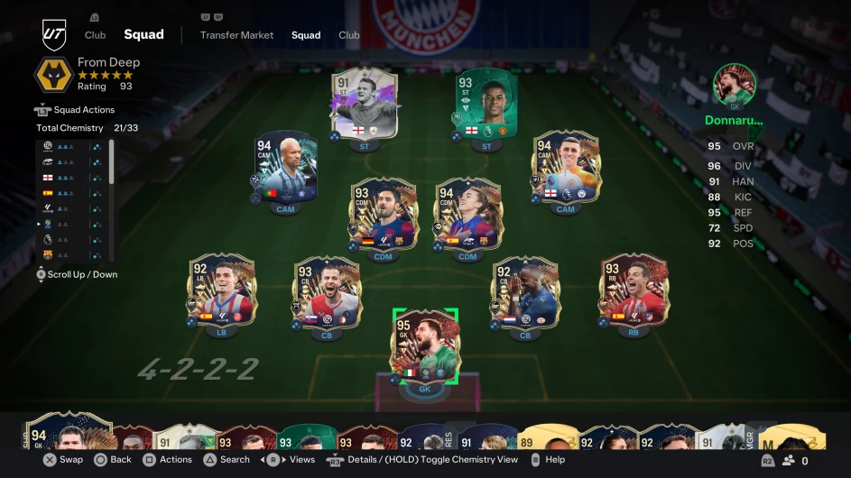

Black Myth wukong
Posted on September 15, 2024 by Iliya Aiman
If you're longing or searching for an epic singleplayer game that is rich with lore, cool weapons, armors and bosses! say no more. This game can offer
you all that. Black Myth: Wukong, produced by developer Game Science (GS), has already generated an estimated $800-900m in revenue to date and will help
project Chinese culture to a global audience. The game, believed to be China's first AAA video game, was developed at a reported cost of about $70m over six years
I have played this game for more than 40 hours. After playing for that long i can tell you that its super worth it. Why you may ask? Firstly the bosses are super unique.
Their moveset is always different and challenging. It reminds me of the soulsborne game. Not just that, the bosses are also based on the book "journey to the west"
which is a classical Chinese novel.I struggle alot with most of the bosses, you really need to learn and abuse some of the mechanics in game.
Other than that, the weapons are superb. There are more than 30 types of weapons and armour in game. These armory can be enchanced as the story progress, all you need is
to find the right materials. The game also has a very good storyline. The story is based on the journey to the west. I dont wanna spoil that much about the story, all i can
say is it is very engaging and has alot of twist and turns. Overall, Black Myth wukong has been a very good experience for me and maybe for you guys as well. The game can be played on PC, Xbox or PS5.
 
Helldivers 2
Posted on September 11, 2024 by Iliya Aiman
When I first heard about Helldivers, I was intrigued by its reputation as a challenging, cooperative twin-stick shooter. The idea of diving into intergalactic
battles with friends sounded like a chaotic yet thrilling experience, so I decided to enlist in the fight. From the moment I dropped onto my first planet, I knew
I was in for a wild ride. Jumping into Helldivers was like being thrown into the deep end of a galactic war. The game doesn't hold your hand; it expects you to learn
on the fly. And that learning curve was part of the fun. My first few missions were filled with frantic moments, trying to keep up with the action while avoiding getting
obliterated by both aliens and my own teammates' fire. Yes, friendly fire is very much a thing in Helldivers, and it added an extra layer of tension and hilarity to every
encounter. The core gameplay of Helldivers is all about teamwork and strategy. Each mission requires you to work closely with your squad, coordinating attacks, calling in
reinforcements, and completing objectives while being constantly on guard. What struck me the most was how every victory felt earned. There's no easy path to success here
every mission is a test of your skill, coordination, and sometimes sheer luck.Friendly fire is both a curse and a source of endless amusement. There were countless times
when a misfired grenade or a poorly timed airstrike wiped out half the team, leading to chaotic moments of laughter and frustration. It made communication and coordination
essential, as every action had to be carefully planned to avoid turning a successful mission into a disaster. One of the most enjoyable aspects of Helldivers was upgrading
my armory and strategizing my loadout. As you progress through the game, you unlock new weapons and stratagems that open up different playstyles. I quickly learned the importance
of balancing my loadout, opting for a mix of heavy firepower and support equipment. My go-to setup became a combination of high-damage weapons and health packs, ensuring that I
could both dish out damage and keep my team alive during the toughest battles. Choosing the right stratagems was crucial. In some missions, having the ability to call in extra
ammo or deploy a turret made all the difference. Other times, it was all about mobility and quick escapes. Adapting to the challenges of each mission and upgrading my arsenal accordingly
became a key part of the strategy.

"Helldivers" is packed with memorable moments, from epic victories to hilarious failures. One of my most unforgettable experiences was during a high-stakes
mission where we had to hold off a massive alien swarm while waiting for extraction. Just when we thought we were in the clear, I accidentally called in an airstrike on our location.
The entire squad went down in a blaze of glory, laughing at the absurdity of it all. Moments like these are what make Helldivers so much fun. Helldivers is an exhilarating, chaotic experience
that perfectly balances teamwork, strategy, and a healthy dose of humor. It's the kind of game that creates unforgettable memories with friends, whether you're pulling off a
flawless mission or accidentally blowing each other up. The constant challenge and the need for coordination make every successful mission feel like a true accomplishment. If you're looking for
a cooperative shooter that will test your skills and provide endless laughs, Helldivers is definitely worth a dive.

EA Sports FC 24 (EAFC 2024)
Posted on September 15, 2024 by Danysh Muqhreez
Playing EA Sports FC 24 was a genuinely immersive and exciting experience, one that felt both familiar in its roots and refreshingly innovative. From the first kickoff, the difference in gameplay was noticeable, particularly with the new HyperMotion V technology. Player animations were remarkably smooth, as if they were directly taken from real-life matches. The way players reacted, dribbled, and positioned themselves was more fluid than ever before, giving the matches an authentic feel. I could see a distinct improvement in how teams moved collectively, not just as individuals, making tactics and strategy feel more realistic and responsive.
One of my favorite parts of the game was diving into Career Mode. The enhanced Player Development System brought a whole new level of depth to managing a team. I spent hours crafting individualized training plans for my players, focusing on developing their specific skills, like improving a striker's finishing or a midfielder's stamina. The system made me feel like I was building my team from the ground up, nurturing young talent into world-class players. Every transfer, match, and training session felt like it had real consequences, adding a level of excitement and engagement I hadn’t experienced in previous games.
When I switched over to Ultimate Team, I was pleased to see that EA Sports had made some important changes that added more flexibility. The new chemistry system made it easier to mix and match players from different leagues and nations, giving me more freedom in building my dream team. I was also excited to experiment with female players for the first time in Ultimate Team. Including women’s football added a fresh dynamic, and the gameplay for female teams was just as smooth and competitive as for the men’s teams. It was a great step forward for representation in the game, and it felt like a natural part of the evolution of the franchise.
The visual improvements were also hard to miss. EA Sports FC 24 took the already impressive graphics of the series to another level. The stadiums felt more alive, with dynamic weather effects that changed the course of a match—rain-soaked pitches became slippery and made controlling the ball more challenging, while sunny days made for faster-paced games. The crowd animations were detailed and responsive, making it feel like a real football atmosphere. I even noticed small touches like fans waving flags or reacting to close calls on the pitch, which added to the overall immersion.
I also had a lot of fun playing Volta Football, which offers a more casual, street-style football experience. The fast-paced action, along with smaller teams and flashy skills, made for quick, adrenaline-filled matches. It was a nice break from the intense 11v11 games and brought back memories of playing street football as a kid. Volta’s customization options also allowed me to create a unique team that reflected my personality, from their kits to their celebration styles.
As I ventured into online play, the matchmaking system seemed smoother than in previous versions, and I found myself competing in intense, evenly matched games. The improvements in AI made even offline matches more challenging and engaging, as the opposing teams adapted to my tactics more intelligently. The way they defended against my attacks or countered with quick breaks was more sophisticated, making every match a true test of strategy.
Overall, EA Sports FC 24 is a fantastic evolution of the football gaming experience. It strikes the perfect balance between honoring the legacy of the FIFA series and pushing the boundaries with new technology and features. The gameplay feels more refined, the graphics are stunning, and the variety of modes ensures there’s something for every type of player. Whether you’re a die-hard fan of Career Mode, obsessed with building the perfect Ultimate Team, or just looking to kick around with friends in Volta, EAFC 24 delivers an engaging and enjoyable experience at every level. It’s easily one of the most enjoyable football games I’ve played in years, and I can’t wait to dive back in for more.
 
Roblox
Posted on September 12, 2024 by Danysh Muqhreez
Playing **Roblox** is a fascinating experience because it feels like stepping into a massive, ever-expanding universe where creativity and imagination know no bounds. From the moment I log in, I’m greeted with a seemingly endless selection of games created by other players, each offering something different and unique. The variety is one of the things I love most about Roblox—you can jump from an intense first-person shooter to a relaxing role-playing game or even a challenging obstacle course, all in the span of a few minutes. Every game feels like its own little world, with its own set of rules, challenges, and communities.
One of my favorite aspects of Roblox is how interactive and collaborative the platform is. It’s not just about playing games, but also about engaging with other players, whether you're teaming up to complete a mission or simply hanging out in a virtual space. The social aspect of Roblox makes it feel more than just a game; it’s a community where players from all over the world can connect, chat, and share their experiences. There’s always something exciting happening, from group events to in-game challenges, and the sense of being part of a larger online world keeps me coming back.
What’s even more thrilling is the ability to create your own games and environments. Roblox Studio gives players the tools to design and build their own experiences, and I’ve spent countless hours experimenting with different game ideas, building my own worlds, and customizing everything from the terrain to the characters. It’s incredibly rewarding to see other players join and enjoy something you’ve created, and it gives a real sense of accomplishment.
The customization options are also a major highlight. From designing your avatar to match your personal style to equipping it with cool items and accessories, Roblox allows you to express yourself in so many ways. I’ve spent time curating the perfect look for my avatar, which makes exploring different games even more fun. Every game I enter feels like a fresh adventure, and my avatar is an extension of my personality as I navigate through different worlds.
Overall, Roblox is a platform that encourages creativity, exploration, and social interaction. It’s more than just playing games; it’s about building, collaborating, and being part of an active, vibrant community. The constant flow of new content and experiences ensures that no two play sessions are ever the same, and the ability to both play and create means the possibilities are limitless. Whether I’m diving into a high-stakes adventure or just chilling in a virtual café with friends, Roblox always offers something new and exciting.